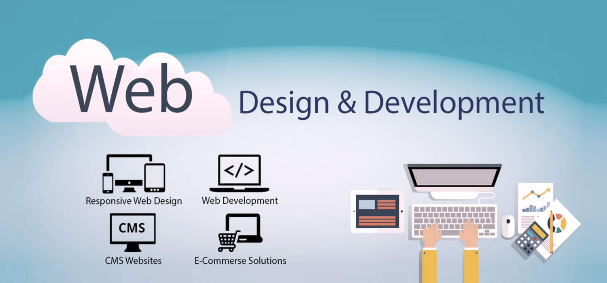

As a student at Federation University, I am currently interning at "Site for Sore Eyes," a web design company.
Mission Statement
Site for Sore Eyes helps businesses build beautiful, functional, and effective websites that drive results. Its team of experienced designers and developers works closely with clients to create custom solutions that meet their unique needs and goals.
Company Culture
Site for Sore Eyes is a collaborative and inclusive workplace that values creativity, innovation, and continuous learning. The company believes in empowering their employees to take ownership of their work and make meaningful contributions to their projects.
Products and Services
Clientele
Site for Sore Eyes works with a range of clients, from small businesses and startups to larger enterprises and non-profits. They have experience in a variety of industries, including retail, healthcare, education, and more.
Notable Projects
Internship Program
Site for Sore Eyes offers a comprehensive internship program for students and recent graduates looking to gain hands-on experience in web design and development. Interns work closely with senior team members on real-world projects, receive regular feedback and mentorship, and have opportunities to attend industry events and workshops.